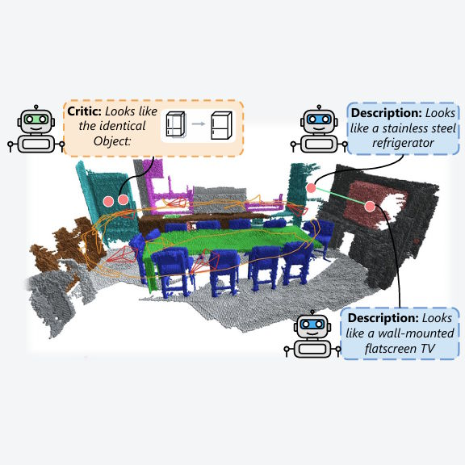
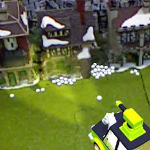
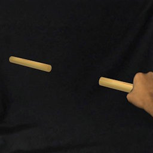

Shohei Mori
Junior Research Group Leader
About me
Researcher in human-centered 3D vision for XR.
I am a Junior Research Group Leader at the Visualization Research Center (VISUS) and the Cluster of Excellence IntCDC at the University of Stuttgart, Germany. I additionally serve as a Guest Associate Professor (Global) at Keio University, Japan, and contribute to the Stuttgart Research Focus Re/producing Realities (Re2). I lead the Mediated Reality Group.
My research focuses on 3D vision for XR with an emphasis on human-centered computing approaches to vision and graphics challenges. I investigate how computational methods can mediate and augment human perception of the physical world.
My work has been published in premier venues including IEEE VR, IEEE ISMAR, ACM SIGGRAPH Asia, ECCV, IEEE/CVF WACV, ACM CHI, ACM UIST, ACM VRST, and IEEE TVCG. Multiple works have received awards, including the IEEE VR Best Paper Award (2022), IEEE ISMAR Best Paper Award (2021, 2023), IEEE ISMAR Best Demo Award (2015), and the SIG-MR Award (2025).
I serve as Paper Co-Chair for IEEE VR 2027 and previously served as Program Co-Chair for IEEE VR 2026 and Associate Paper Co-Chair for IEEE ISMAR 2025.
Workshop Calls

Recent Topics
View all →
Human-centered 3D vision and AR for consistent and comprehensive scene capture.

Vision-language agents reason about 3D scene semantics.

Removing 3D objects from a live scene for computationally mediated reality.

Illusory effects arise from visual augmentation operating through mediated reality
Professional Activity, Awards, and Teaching
Awards
Experiencing Weight Illusion in AR Extended Displays: A Portable Community Demo
Not All WIP Are Perceived Equally: Different Speed Expectations in Seated Walk-in-Place Locomotion
Toward Multi-Plane Image Reconstruction from a Casually Captured Focal Stack (in Japanese)
Multi-layer Image Generation from Synthetic Defocus Image Evaluation (in Japanese)
Depth Estimation Using Event Focal Stack (in Japanese)
Multi-layer Scene Representation from Composed Focal Stacks
Exemplar-Based Inpainting for 6DOF Virtual Reality Photos
Video See-Through Mixed Reality with Focus Cues
Visual Odometry Adjusted to the Scale of a Global Map (in Japanese)
3D Structure Estimation of the Surgical Field from Multi-view Video ―Towards the Free-viewpoint Visualization of Open Surgery― (in Japanese)
Neural Cameras: Learning Camera Characteristics for Coherent Mixed Reality Rendering
Tools for Teaching Mining Students in Virtual Reality based on 360° Video Experiences
DOMINO (Do Mixed-reality Non-stop) Toppling
An AR/MR Camera Tracker Using View Dependent Texture Mapping
Building a Data Acquisition Studio for Diminished Reality Research
Grants
AI and Imaging Methods to Characterise the Performance of Biofibre Systems
Immersive 3D Spatial Editing for Large Workspace with a Stretchable Stylus and a Hand-held Canvas
3DDR – Real-time Three-Dimensional Diminished Reality
Proof-of-Concept zur Modifikation von Sensordaten
An Interdisciplinary Research Center on Supporting Cognitive and Communication for Elderly
Perceptually High Contrast Optical See-Through HMD based on Adaptation
Research on Mixed and Augmented Reality Using Light Field Cameras
Two Approaches for Improving the Expressiveness of Mixed Reality Space
Systematizing and Consolidating a Technological Basis of Mixed and Diminished Reality Space
Scholarships
Prize Fellowship for Doctoral Degree Students, for JSPS DC1/DC2 achievers
For the top graduate
For the top three high achievers
For the top three high achievers
For the top three high achievers
Lecturer
Lectures, scientific writing, and presentation organization
Organization of weekly students' research presentations
Guest Lecturer
Lectures on image-based and neural rendering
Invited lecture on "Augmented Reality Research in Austria and Germany"
Lectures on diminished reality
Lectures on image-based rendering; assignment design on light field reparameterization and AR-based capturing
Lectures on visual tracking, camera calibration, image-based rendering, and diminished reality
Lecture on image-based rendering, plenoptic cameras, light field displays, and neural rendering
Lecture on light field theory, imaging, and microscopy
Invited lecture on "What we can/cannot see through today's mixed reality"
Invited lecture on "Why is 'place CG there' in AR still challenging"
Teaching Assistant
Provided topics for student research and description
Managed CG assignment and conducted plagiarism interviews
Group work support and assignment evaluations
Invited Lab Talks
Augmented Reality Research in Austria and Germany
Augmented Reality Research in Austria and Germany
Mediated Reality: 3D Real-World Augmentation and Beyond
Through the Looking Glass of Mediated Reality
Lenses to See the World and Us in Mediated Reality
Towards Editable World and Understanding It